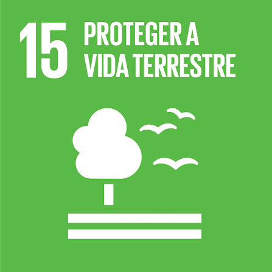
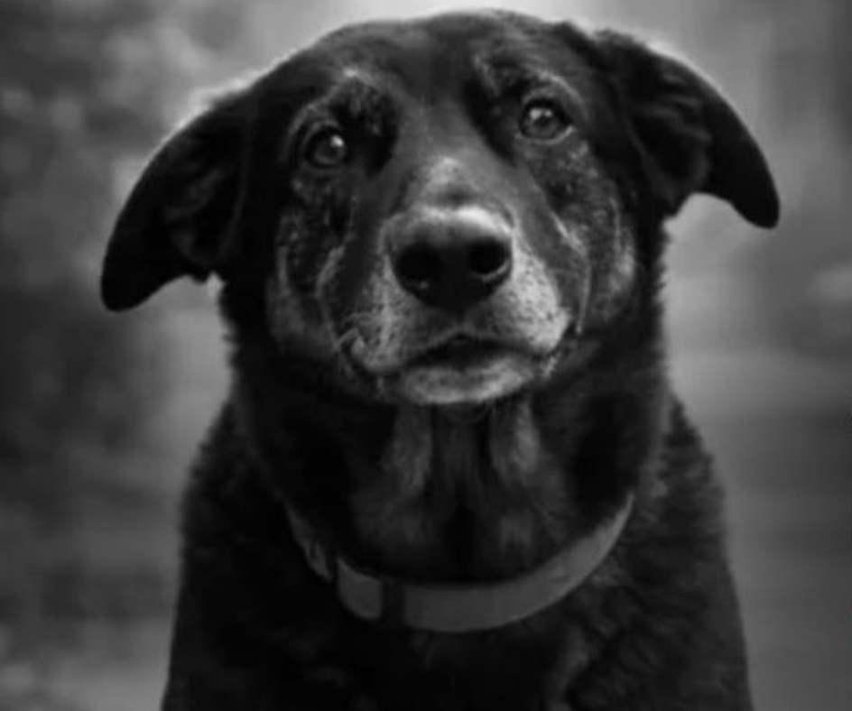
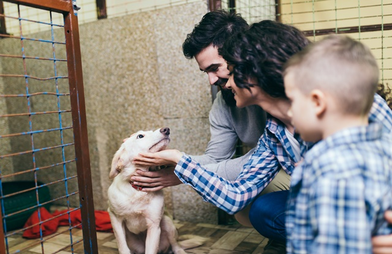
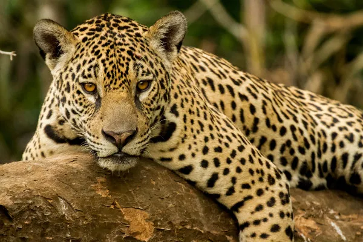
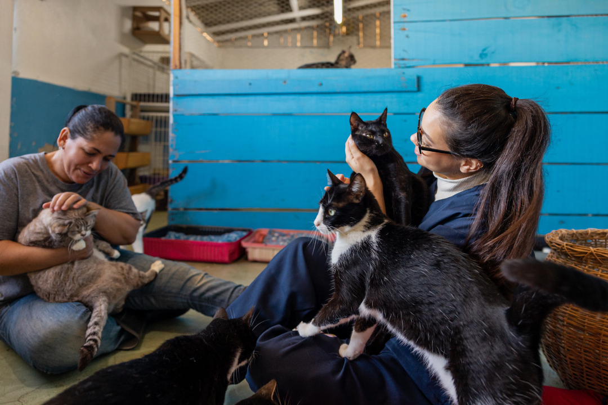

FICHA DO PROJETO • ODS 15 – VIDA TERRESTRE • PROTEÇÃO ANIMAL
ODS 15 – Vida Terrestre é um dos Objetivos de Desenvolvimento
Sustentável da ONU. Seu intuito é proteger os animais, as
florestas e os ecossistemas terrestres, combatendo o
desmatamento, a caça ilegal e a destruição dos habitats
naturais. Seu principal objetivo é preservar a biodiversidade
e garantir um planeta saudável para as futuras gerações. 🌳🐾

Toda vida merece proteção
Transformando a tecnologia em esperança para os animais.
Este site foi criado para ajudar na proteção dos animais e
contribuir para a ODS 15, Vida Terrestre.
Qual é o problema?
Muitos animais sofrem com o abandono, os maus-tratos e a
destruição da natureza.
Nosso Objetivo
Incentivar o cuidado, o respeito e a proteção dos animais.
VOCÊ SABIA? A VIDA NA TERRA ESTÁ EM PERIGO!
Você sabia que aproximadamente 1 milhão de espécies de animais
e plantas estão ameaçadas de extinção no mundo?
Entre os animais em risco estão tigres, elefantes, rinocerontes,
tartarugas-marinhas, orangotangos e diversas espécies de araras.
No Brasil, animais como a onça-pintada, o mico-leão-dourado e o
peixe-boi-marinho também enfrentam ameaças.
Além dos animais selvagens, os cães também merecem atenção!
Embora não estejam ameaçados de extinção como espécie, muitos
sofrem com abandono, maus-tratos e falta de cuidados.
O desmatamento, as queimadas, a caça ilegal e a destruição dos
habitats são algumas das principais causas da perda da
biodiversidade.
UM ALERTA: CADA VIDA IMPORTA! PROTEGER OS ANIMAIS É
PRESERVAR O FUTURO DO NOSSO PLANETA!
Nossa solução
Criar um site para divulgar animais abandonados, incentivar
adoção responsável, ajudar na proteção dos animais silvestres,
combater a caça ilegal e conscientizar as pessoas sobre a
importância da preservação da natureza.
Por trás dos números, existem vidas
Orelha: uma história que clama por justiça!
O caso do cachorro Orelha revela uma triste realidade enfrentada
por muitos animais no Brasil. Sua história nos alerta sobre a
importância de combater os maus-tratos, denunciar a violência
e incentivar o respeito à vida animal. Mais do que
conscientização, precisamos de atitudes que transformem essa
realidade.
Orelha era um cachorro comunitário que vivia na Praia Brava,
em Florianópolis, onde recebia carinho, alimentação e cuidados
dos moradores. Em janeiro de 2026, foi encontrado em estado
grave e precisou de atendimento veterinário, mas não resistiu.
Inicialmente, sua morte foi associada a suspeitas de
maus-tratos, porém a investigação apontou uma grave infecção
óssea. Sua história comoveu o Brasil e reforçou a importância
da proteção e do respeito à vida animal.
Que a história de Orelha não seja apenas lembrada, mas seja
motivo de mudança.

Pequenas atitudes, grandes mudanças!

Adote, não abandone
Dê uma nova oportunidade aos animais.

Proteja os animais silvestres
Respeite seus habitats naturais.

Seja um voluntário
Ajude abrigos e projetos de proteção animal.
Denuncie maus-tratos
Não se cale diante da crueldade.
Você consegue fazer a diferença?
Pequenas atitudes podem transformar o mundo.
Cada pessoa pode contribuir para proteger os animais
e preservar a natureza.
🌳
Plante árvores
Ajude a preservar as florestas e os habitats dos animais.
♻️
Recicle
Separe o lixo e evite a poluição do meio ambiente.
🐾
Respeite os animais
Cuide, proteja e respeite todas as formas de vida.
🌎
Preserve a natureza
Ajude a proteger os recursos naturais do nosso planeta.
💚 Juntos podemos construir um planeta melhor!
O futuro da vida terrestre também depende de você.
🌎 DESAFIO AMBIENTAL
Operação: Guardiões da Terra
Teste seus conhecimentos sobre a proteção dos animais
e da natureza! Leia cada pergunta e selecione uma alternativa.
Confira o gabarito depois de responder
1-B • 2-C • 3-A • 4-D • 5-B
Continue aprendendo e faça sua parte pela vida terrestre! 💚
Cada escolha consciente ajuda a construir um futuro melhor. 💚